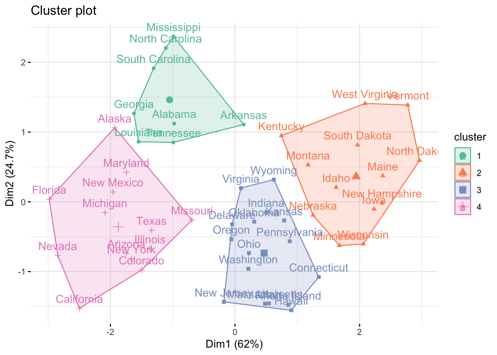
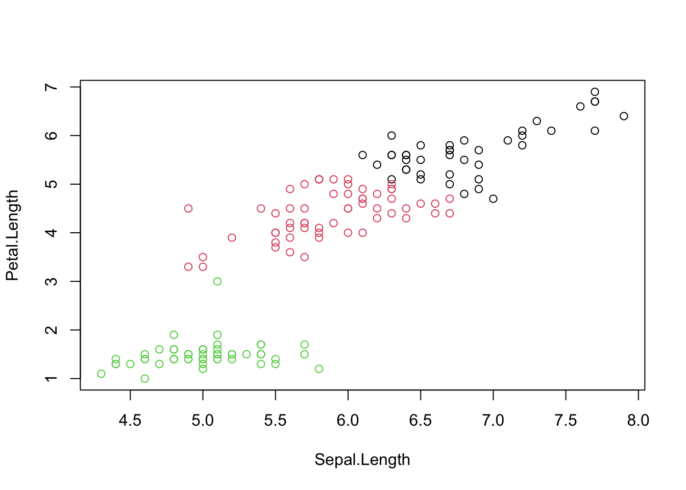
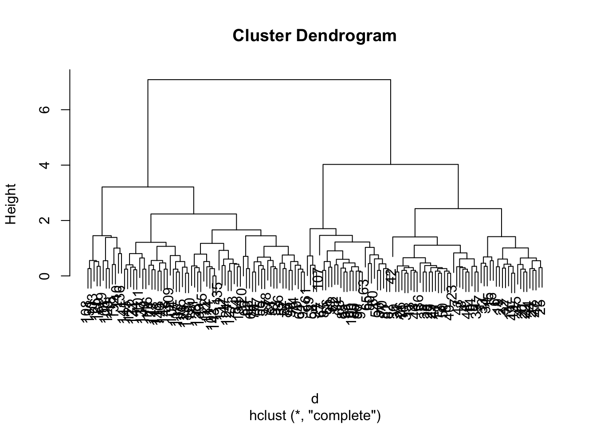
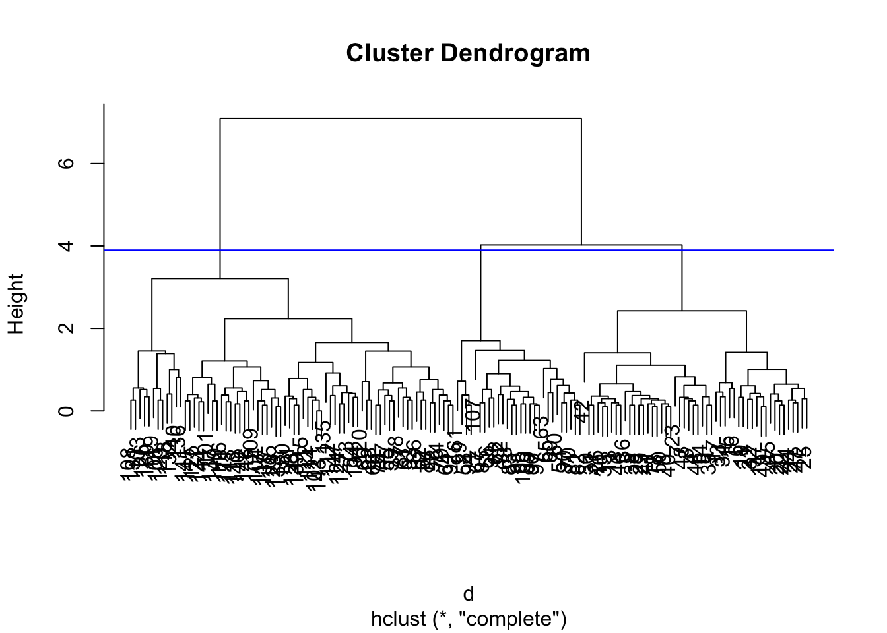

Chapter 3 K-means
2021-12-25 updated
3.1 Case 1
K-means clustering: It is a method to cluster n points into k clusters based on the means of shortest distance. (cautsion: do not confused it with K-nearest clustering). We use the demo data sets “USArrests”.
data("USArrests")
df <- USArrests
head(df)## Murder Assault UrbanPop Rape
## Alabama 13.2 236 58 21.2
## Alaska 10.0 263 48 44.5
## Arizona 8.1 294 80 31.0
## Arkansas 8.8 190 50 19.5
## California 9.0 276 91 40.6
## Colorado 7.9 204 78 38.7# scaling the data
df <- scale(df)
head(df)## Murder Assault UrbanPop
## Alabama 1.24256408 0.7828393 -0.5209066
## Alaska 0.50786248 1.1068225 -1.2117642
## Arizona 0.07163341 1.4788032 0.9989801
## Arkansas 0.23234938 0.2308680 -1.0735927
## California 0.27826823 1.2628144 1.7589234
## Colorado 0.02571456 0.3988593 0.8608085
## Rape
## Alabama -0.003416473
## Alaska 2.484202941
## Arizona 1.042878388
## Arkansas -0.184916602
## California 2.067820292
## Colorado 1.864967207We use factoextra package to create beautiful clusters visualization
We also use fviz_nbclust to determine the optimal number of clusters
set.seed(123)
fviz_nbclust(df, kmeans, method="wss") + geom_vline(xintercept = 4, linetype = 2)
set.seed(123)
(km.res <- kmeans(df, centers = 4, nstart = 25))## K-means clustering with 4 clusters of sizes 8, 13, 16, 13
##
## Cluster means:
## Murder Assault UrbanPop
## 1 1.4118898 0.8743346 -0.8145211
## 2 -0.9615407 -1.1066010 -0.9301069
## 3 -0.4894375 -0.3826001 0.5758298
## 4 0.6950701 1.0394414 0.7226370
## Rape
## 1 0.01927104
## 2 -0.96676331
## 3 -0.26165379
## 4 1.27693964
##
## Clustering vector:
## Alabama Alaska
## 1 4
## Arizona Arkansas
## 4 1
## California Colorado
## 4 4
## Connecticut Delaware
## 3 3
## Florida Georgia
## 4 1
## Hawaii Idaho
## 3 2
## Illinois Indiana
## 4 3
## Iowa Kansas
## 2 3
## Kentucky Louisiana
## 2 1
## Maine Maryland
## 2 4
## Massachusetts Michigan
## 3 4
## Minnesota Mississippi
## 2 1
## Missouri Montana
## 4 2
## Nebraska Nevada
## 2 4
## New Hampshire New Jersey
## 2 3
## New Mexico New York
## 4 4
## North Carolina North Dakota
## 1 2
## Ohio Oklahoma
## 3 3
## Oregon Pennsylvania
## 3 3
## Rhode Island South Carolina
## 3 1
## South Dakota Tennessee
## 2 1
## Texas Utah
## 4 3
## Vermont Virginia
## 2 3
## Washington West Virginia
## 3 2
## Wisconsin Wyoming
## 2 3
##
## Within cluster sum of squares by cluster:
## [1] 8.316061 11.952463 16.212213 19.922437
## (between_SS / total_SS = 71.2 %)
##
## Available components:
##
## [1] "cluster" "centers"
## [3] "totss" "withinss"
## [5] "tot.withinss" "betweenss"
## [7] "size" "iter"
## [9] "ifault"There are 7 Avaliable components you can access it.
Compute the mean of each variables by clustering using the original data:
aggregate(USArrests, by=list(cluster=km.res$cluster), mean)## cluster Murder Assault UrbanPop
## 1 1 13.93750 243.62500 53.75000
## 2 2 3.60000 78.53846 52.07692
## 3 3 5.65625 138.87500 73.87500
## 4 4 10.81538 257.38462 76.00000
## Rape
## 1 21.41250
## 2 12.17692
## 3 18.78125
## 4 33.19231Display results with your cluster result:
dd <- cbind(USArrests, cluster = km.res$cluster)
head(dd)## Murder Assault UrbanPop Rape
## Alabama 13.2 236 58 21.2
## Alaska 10.0 263 48 44.5
## Arizona 8.1 294 80 31.0
## Arkansas 8.8 190 50 19.5
## California 9.0 276 91 40.6
## Colorado 7.9 204 78 38.7
## cluster
## Alabama 1
## Alaska 4
## Arizona 4
## Arkansas 1
## California 4
## Colorado 4Plot the clustering result using factoextra package
library(factoextra)
fviz_cluster(km.res, df, palette="Set2", ggtheme = theme_minimal())
#points(km.res$centers, col = 1:2, pch = 8, cex=2)Reference: here
3.2 Case 2
Use iris data for a second demo
str(iris)## 'data.frame': 150 obs. of 5 variables:
## $ Sepal.Length: num 5.1 4.9 4.7 4.6 5 5.4 4.6 5 4.4 4.9 ...
## $ Sepal.Width : num 3.5 3 3.2 3.1 3.6 3.9 3.4 3.4 2.9 3.1 ...
## $ Petal.Length: num 1.4 1.4 1.3 1.5 1.4 1.7 1.4 1.5 1.4 1.5 ...
## $ Petal.Width : num 0.2 0.2 0.2 0.2 0.2 0.4 0.3 0.2 0.2 0.1 ...
## $ Species : Factor w/ 3 levels "setosa","versicolor",..: 1 1 1 1 1 1 1 1 1 1 ...We use the features with “Length” to do a kmeans clustering:
i <- grep("Length", names(iris))
x <- iris[, i]
cl <- kmeans(x, centers = 3, nstart = 10)
plot(x, col = cl$cluster)
3.3 Hierarchical clustering
d <- dist(iris[, 1:4]) # calculate the euclidean distance
hcl <- hclust(d)
hcl##
## Call:
## hclust(d = d)
##
## Cluster method : complete
## Distance : euclidean
## Number of objects: 150plot(hcl)
Usually, you will need to cut the tree to define the clusters with cutree().
(cutree(hcl, h=1.5)) # at certain height## [1] 1 1 1 1 1 2 1 1 1 1 2 2 1 1 2 2 2 1 2
## [20] 2 2 2 1 2 2 1 2 1 1 1 1 2 2 2 1 1 2 1
## [39] 1 1 1 1 1 2 2 1 2 1 2 1 3 3 3 4 3 4 3
## [58] 5 3 4 5 4 4 3 4 3 4 4 3 4 6 4 6 3 3 3
## [77] 3 3 3 4 4 4 4 6 4 3 3 3 4 4 4 3 4 5 4
## [96] 4 4 3 5 4 7 6 8 7 7 8 4 8 7 8 7 6 7 6
## [115] 6 7 7 8 8 3 7 6 8 6 7 8 6 6 7 8 8 8 7
## [134] 6 6 8 7 7 6 7 7 7 6 7 7 7 6 7 7 6cutree(hcl, k=2) # with certain number of clusters## [1] 1 1 1 1 1 1 1 1 1 1 1 1 1 1 1 1 1 1 1
## [20] 1 1 1 1 1 1 1 1 1 1 1 1 1 1 1 1 1 1 1
## [39] 1 1 1 1 1 1 1 1 1 1 1 1 2 2 2 1 2 1 2
## [58] 1 2 1 1 1 1 2 1 2 1 1 2 1 2 1 2 2 2 2
## [77] 2 2 2 1 1 1 1 2 1 2 2 2 1 1 1 2 1 1 1
## [96] 1 1 2 1 1 2 2 2 2 2 2 1 2 2 2 2 2 2 2
## [115] 2 2 2 2 2 2 2 2 2 2 2 2 2 2 2 2 2 2 2
## [134] 2 2 2 2 2 2 2 2 2 2 2 2 2 2 2 2 2plot(hcl)
abline(h = 3.9, col="blue")
You can check the result using identical()
identical(cutree(hcl, k=3), cutree(hcl, h=3.9))## [1] TRUE